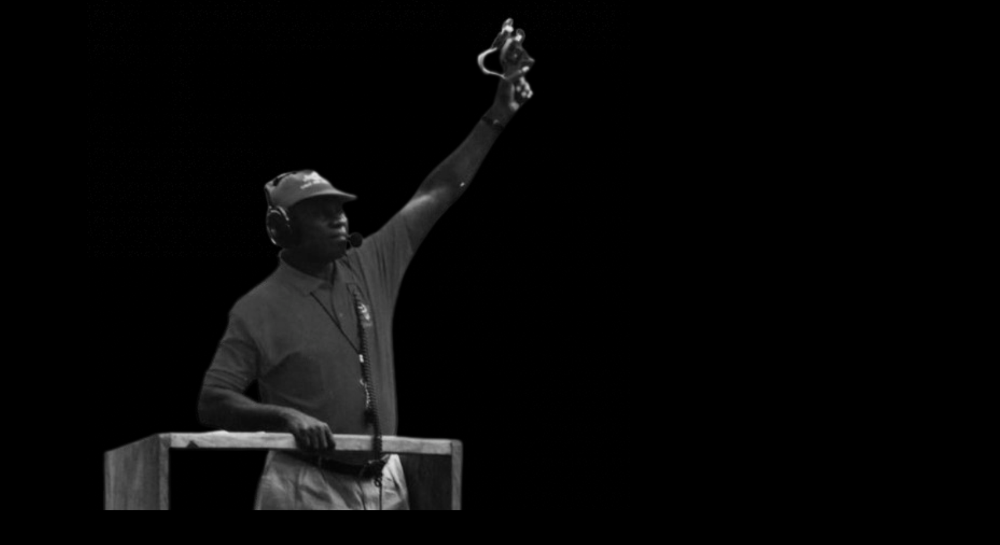

Gladstone. G. Agbamu
A Tribute To The Champ!
1942 - 2017
A Tribute To The Champ!
1942 - 2017
Agbamu did a two-year training course in Missouri, U.S., where he announced his retirement from athletics. He came back to the country the same year and was assigned to take over coaching job at the Mid-West State, where he led the team to win the NSF’s overall winners’ medal. In 1990, Agbamu was also the track and field coach to the Commonwealth Games in Auckland, New Zealand, with the likes of Henry Amike, Yusuf Ali and many others. Nigeria won three gold, four silver and three bronze medals and, “for me, that was another successful year.” He also took the team to the World Championship in Tokyo in 1991 before retiring from coaching.
”Retired but not tired, he became a sports administrator with Delta State, drawing up programmes for coaches to aid the development of sports and athletes. The former versatile runner, who also earned himself the nickname, Grandpa of Nigerian Coaches, was the vice president of the National Association of Technical Officials (NATO) in track and field. He described his experience running for Nigeria as “a great experience wearing the national colours.
"Coachito" Lived a very eventful life, Had 9 children and got the chance to see all of them married and spent time with his grandchildren. A true National Treasure after his passing in 2017, We all reflected on how he carried himself and lived his life.